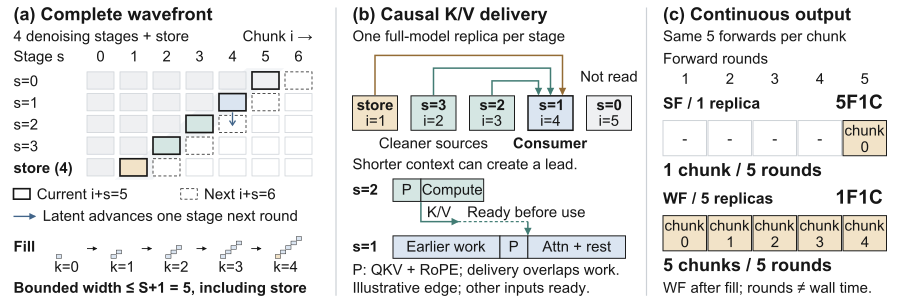

A car wash with five bays usually moves one car through every bay before the next car enters. Wave Forcing lets the next car in as soon as the first leaves bay one, so five cars sit in five bays at once. Each car still gets every wash step; the exit simply sees a clean car every cycle.
칸이 다섯 개인 세차장은 보통 차 한 대를 모든 칸에 다 통과시킨 뒤 다음 차를 들인다. Wave Forcing은 첫 차가 첫 칸을 나서자마자 다음 차를 들여, 다섯 대가 다섯 칸에 동시에 있게 한다. 차마다 세차 단계는 모두 거치고, 출구에서는 한 주기마다 깨끗한 차가 한 대씩 나온다.
How it works: a causal wavefront of chunks작동 방식은 청크들의 인과적 파면
The work per chunk is unchanged; what changes is that different chunks occupy different denoising stages at the same time.
청크 하나에 드는 계산은 그대로다. 달라진 것은 여러 청크가 동시에 서로 다른 디노이징 단계를 차지한다는 점이다.

- Causal wavefront.인과적 파면.Chunk i runs stage s in round i+s, and attends to itself and every cleaner predecessor, never to later chunks.청크 i는 i+s 바퀴에서 단계 s를 실행하고, 자신과 더 깨끗한 앞선 청크들만 보며 뒤 청크는 보지 않는다.
- One replica per stage.단계마다 복제본 하나.The runtime publishes each layer's K/V early and overlaps transfer with compute, so consumers rarely wait.런타임은 층마다 K/V를 미리 보내고 전송과 계산을 겹쳐, 받는 쪽이 기다리는 일을 줄인다.
- Train for the schedule.일정에 맞춘 학습.Mixed-noise DMD, then DMD plus LPIPS on teacher chunks, then on-policy DMD on self-generated history.혼합 노이즈 DMD, 이어서 교사 청크에 DMD와 LPIPS, 마지막으로 스스로 만든 기록으로 온폴리시 DMD를 한다.
Key point: motion comes back without losing the subject핵심은 주인공을 잃지 않고 움직임을 되찾는다는 것
On 100-second videos, 5-step WF moves 2.5× as much as Rolling Forcing while keeping its subject in view. Causal Forcing moves more but loses the subject.
100초 영상에서 5스텝 WF는 Rolling Forcing보다 2.5배 많이 움직이면서도 주인공을 화면에 붙잡아 둔다. Causal Forcing은 더 많이 움직이지만 주인공을 잃는다.
Results: real-time many times over결과는 실시간의 몇 배
Using eight GPUs well, 4-step WF streams 134.8 frames per second end to end, against 19.1 for single-GPU Causal Forcing.
GPU 8장을 잘 활용해 4스텝 WF는 전체 초당 134.8프레임을 내고, GPU 한 장의 Causal Forcing은 19.1프레임이다.
Quality stays level with Rolling Forcing, while Causal Forcing's subject loss and camera drift make it unusable for long streams.
품질은 Rolling Forcing과 비슷하게 유지되고, Causal Forcing은 주인공을 잃고 카메라가 이탈해 긴 스트림에 쓰기 어렵다.
| Method | Total | Long Q. | Subject | Drift | FPS |
|---|---|---|---|---|---|
| Rolling Forcing, 1 GPU | 81.15 | 81.18 | 92.75 | 0.17 | 17.46 |
| Causal Forcing, 1 GPU | 79.61 | 82.15 | 71.11 | 11.14 | 19.06 |
| RF + causal attn, 8 GPUs | 80.89 | 80.50 | 91.26 | 0.40 | 96.56 |
| WF 4-step, 8 GPUs | 80.74 | 80.89 | 91.88 | 0.36 | 134.81 |
| WF 5-step, 8 GPUs | 81.64 | 81.26 | 97.10 | 0.37 | 96.46 |
For streaming video on several GPUs, pipeline the denoising steps of successive chunks instead of splitting attention across devices. Judge long rollouts with subject and drift checks too, since VBench rewarded a model that lost its subject.GPU 여러 장으로 스트리밍 비디오를 만든다면, 어텐션을 장치에 쪼개기보다 이어지는 청크의 디노이징 단계를 파이프라인으로 흘리자. 긴 생성은 주인공 유지와 이탈 지표로도 확인하자. VBench는 주인공을 잃은 모델에 높은 점수를 줬다.
The speedup comes from eight GPUs, and parallelism is capped by the step count. Throughput is not input-to-output latency, the timing runs used dummy weights, and prompt or action changes mid-stream are untested.속도 향상은 GPU 8장에서 나오고, 병렬화 폭은 스텝 수로 제한된다. 처리량은 입력에서 출력까지의 지연과 다르고, 속도 측정은 임의 가중치로 했으며, 생성 중 프롬프트나 행동이 바뀌는 상황은 시험하지 않았다.